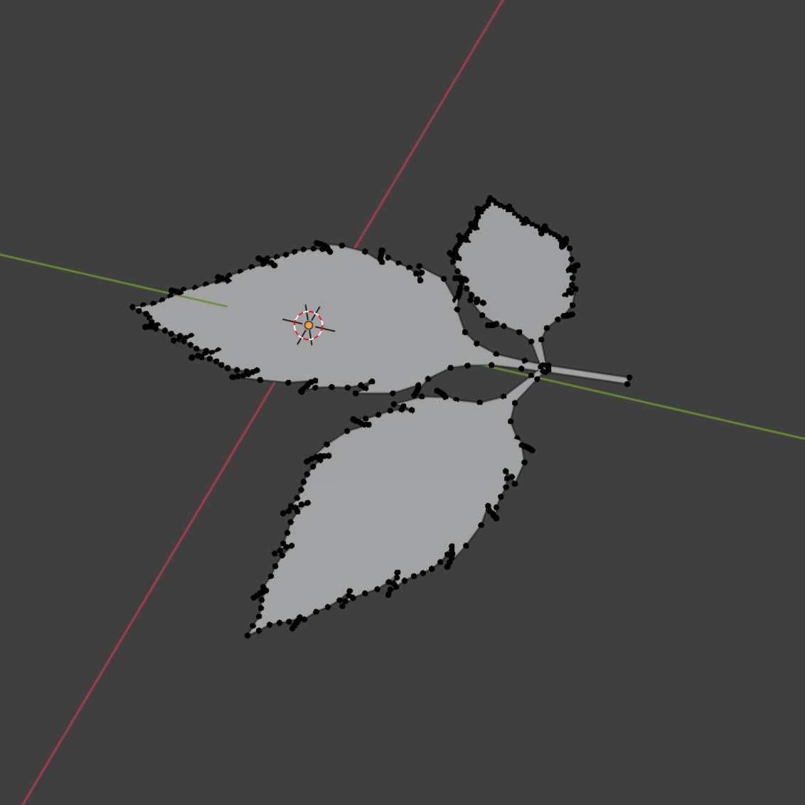
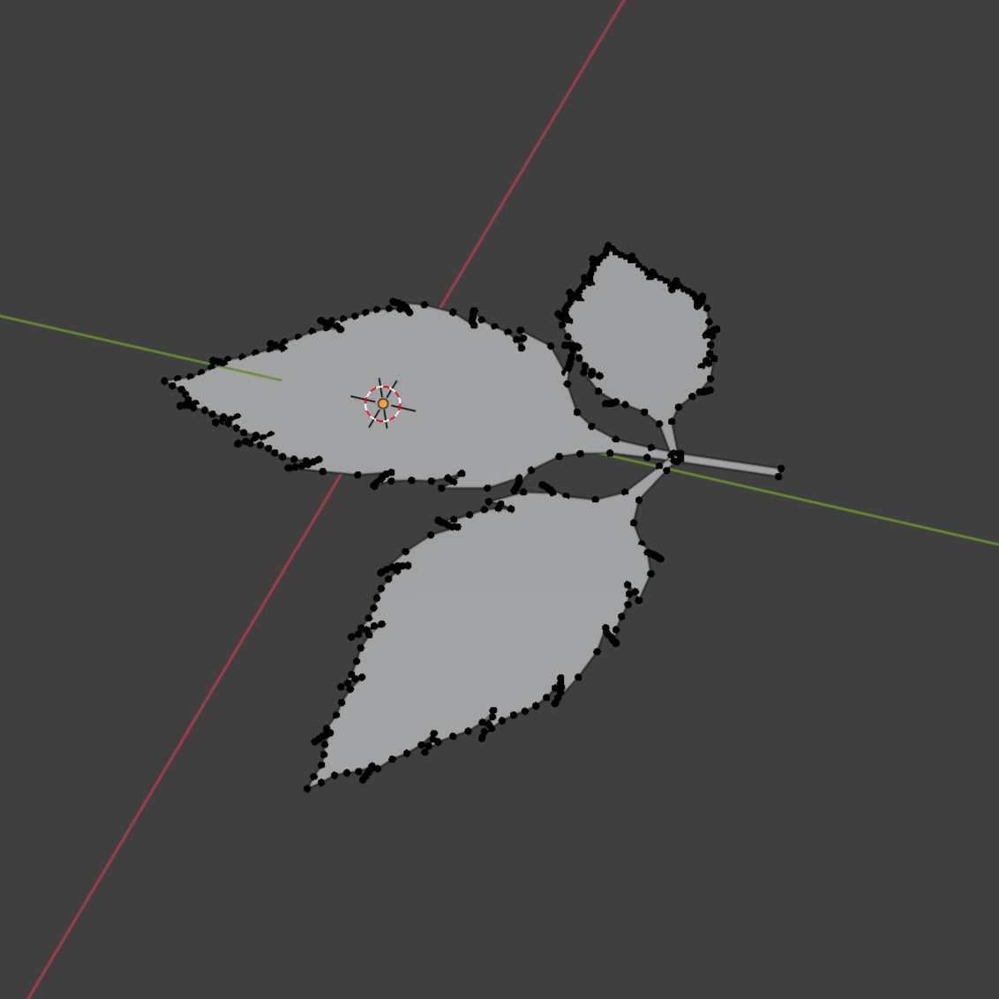

Process
I first started with an idea to 3D print a rose for my mom for her Christmas present. However my university's 3D printers stations were closed for winter break when I asked about printing, so I settled with making a model.

It started with this group of sketches on a lab notebook, and I ended up choosing the sketch shown as my baseline. I first tried to get a leaf shape by drawing a spiral and experimenting with bulb shapes, but after some attempts I got a bulb shape I liked. In the notes you can see I wrote "plan 2..." but that's the one I decided to go with first. All it took was an annotation to mesh and controlled dissolve.
After implementing the petal design as a reference and into a mesh, I then extruded the petals and scaled the extrusion down to make a cone-like shape. With the cone like shape, I then added subdivisions to produce a bowl-like shape which produced the mesh you see. However, I flatted the bowl shape to produce the skeleton you see. On the skeleton you can see the initial pattern as well as the stem I made. The stem was made simply by making a small circle face at the bottom of the bulb, extruding it, scaling the end to be smaller, and adding controlled cuts to add a unique bending shape.
Next came the leaves, which arguably took more effort than the bulb. Here were the starting sketches for my leaves, in which I only sketched half of the leaf so I can later mirror it across the vertical axis. One problem I came across when annotating over the reference in blender is the different strokes would not count as the same edge, and the face couldn't be filled, however adding the connections manually to the strokes made it possible to make the faces.
 

After forming the plane that would be my leaf, I then added the face and ended up with a flat leaf! To make the tri-leaf pattern, I simply duplicated the face, scaled it to a new size, rotated it a bit, and made the stem intersect with the biggest leaf's stem. Then to add depth I used a portional scaling on the z-axis, adding a more natural look of a leaf being affected by gravity.
And finally, after adding a couple of tri-leaf patters, I came to a nice looking flower. Adding the leaves at different angles and sizes did the job of looking like a variety. Afterwards, I added color with Blender materials and created a flower pot to showcase the flower. After adding a backdrop I made my showcase animation ended up with a beautiful 3D model.